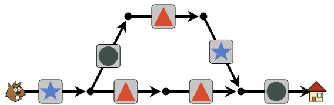

Solution
Les instructions comportent 5 formes. Il faut donc faire passer Castor par le chemin du haut, qui comporte 5 flèches, et pas par le chemin du bas qui ne comporte que 4 flèches.
Sur le chemin du haut, on place dans les flèches les formes correspondants aux instructions, dans l'ordre.

Pour les cases du chemin du bas, on peut les compléter avec n'importe quelle forme, il faut juste éviter de placer un rond sur le chemin du bas juste après la première bifurcation, car cela entrerait en conflit avec le rond utilisé sur le chemin du haut. Par exemple, si l'on met des triangles en bas, on obtient la solution suivante :

Dans le parcours, il y a deux "boucles" : une qui monte vers le haut et une qui descend vers le bas. Si l'on essaie d'utiliser la boucle du bas d'abord, on se retrouve tout de suite coincé.

En effet, le triangle suivant dans les instructions va forcer Castor à rentrer une deuxième fois dans la boucle du bas, mais ensuite les formes rencontrées ne correspondent plus aux instructions.
Il faut donc faire partir Castor d'abord dans la boucle du haut :

Ensuite, on emmène Castor dans la boucle du bas. Castor remontra alors faire encore un tour dans la boucle du haut, avant de ressortir en suivant le rond final.

Dans les instructions à suivre, un motif se répète 2 fois (étoile, triangle, triangle, étoile), puis on a une étoile, et un autre motif qui se répète 2 fois (rond, rond, triangle). Commençons par placer le premier motif sur la "boucle" formée de 4 flèches.

On complète ensuite avec la boucle formée de 3 flèches, située en haut à droite. Quant à la boucle située en haut à gauche, on peut remplir les cases avec n'importe quelles formes, il faut juste éviter de mettre une étoile sur la première flèche de cette boucle. Voici une solution :

C'est de l'informatique !